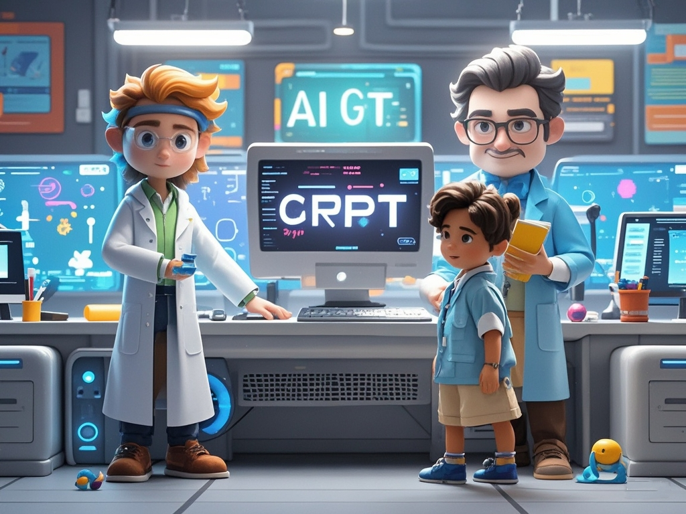

AI基础俱乐部
陆向谦实验室AI基础俱乐部为家长和孩子们提供一个独特的机会，让他们探索人工智能的精彩世界。通过最新一代的AIBot开发平台，引领孩子们开发自己感兴趣的AI原生应用程序，如AI英语外教、AI家庭教师，AI绘本等。在这里，孩子们将通过动手实践和创新思维学习人工智能的基础知识，培养编程技能，并通过实际项目体验，探索AI技术的无限可能。
立即报名陆向谦实验室AI基础俱乐部为家长和孩子们提供一个独特的机会，让他们探索人工智能的精彩世界。通过最新一代的AIBot开发平台，引领孩子们开发自己感兴趣的AI原生应用程序，如AI英语外教、AI家庭教师，AI绘本等。在这里，孩子们将通过动手实践和创新思维学习人工智能的基础知识，培养编程技能，并通过实际项目体验，探索AI技术的无限可能。
立即报名